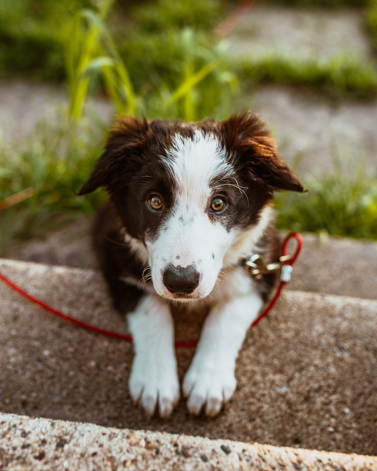

Hadassa Michelle

A ONG Fonsec'sPet é uma organização que oferece instruções de como criar e adotar um pet. Nossa missão é promover o bem-estar e a adoção de animais de companhia e nutrir relacionamentos amorosos e duradouros entre animais e pessoas. Para apoiar nossa missão, a Fonsec'sPet oferece vários programas e serviços centrados em animais para famílias e crianças.
Empresa criada para auxiliar em doações e adoções de PETS
Laboratório construído para tratamentos específicos
Hospital veterinário de Cândido Mota
Decidir adotar um animal de estimação, é uma decisão importante. As recompensas de adotar um amigo de quatro patas superam a maioria das preocupações e medos que muitas pessoas têm em relação à adoção. Uma coisa é certa, é que a vida com um animal resgatado traz grandes mudanças – da melhor maneira! Diga adeus às noites previsíveis e à sua rotina chata e diga olá para um novo sopro de vida. Seu novo animal de estimação manterá a vida excitante e cheia de amor.
A Fonsec'sPet me deu muito apoio e informações quando eu queria adotar um cachorrinho. Hoje faz uma semana que a Jullie faz parte da minha vida e eu não poderia estar mais feliz.
Conheci a Fonsec'sPet através da indicação de amigos. Eles me deram muito apoio depois que decidi adotar o Rappi'n, no começo não sabia nada de gatos, e me ajudaram de mais.

Os serviços da Fonsec'sPet são muito bons, através da ajuda deles finalmente decidi adotar o Spike, foi uma das melhores escolhas que eu tomei, me sinto muito mais feliz e acolhido.

Entre em contato com a gente, para adotar ou fazer alguma doação.